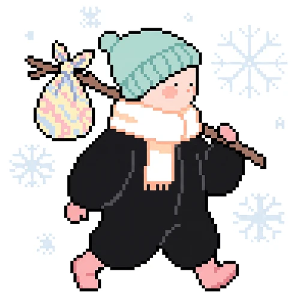
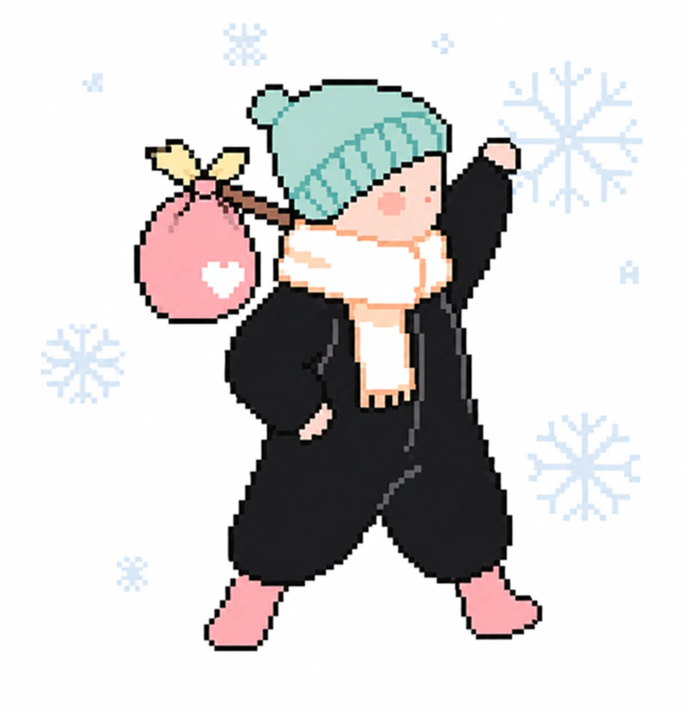
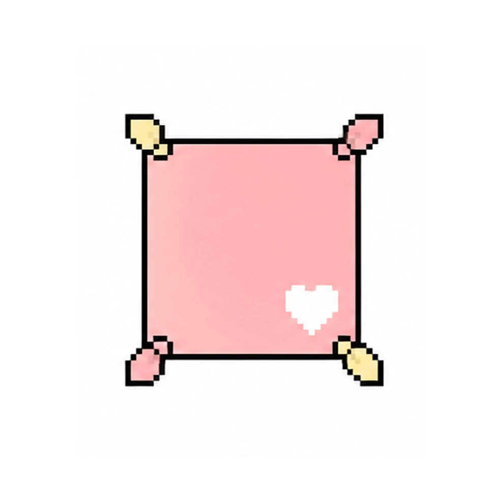

디지털 기억 유산

보따리
BOTTARI
보따리 싸러 가볼까?
구름 위 집에 사는 한 나그네.
나그네의 이름은 무엇인가?
나그네의 이름은 무엇인가?
보자기를 골라보자
보따리를 꾸려보자

비로소, 가벼워졌다!
가장 작은 보따리 안에 남은 세 가지.
나머지는 이미 충분했던 것들이었다.
이제 매듭을 짓고, 길을 떠나자.
나머지는 이미 충분했던 것들이었다.
이제 매듭을 짓고, 길을 떠나자.
보따리 맡겨두기
보따리 맡겨두기
소중한 이가 언젠가 열어볼 수 있도록
암호를 정하자.
*이 암호를 아는 사람만 보따리를 열어볼 수 있어요.(4자 이상)
암호를 정하자.
*이 암호를 아는 사람만 보따리를 열어볼 수 있어요.(4자 이상)
주소 알려주기
소중한 이에게 전달하자.
*이 링크와 암호를 전하면, 받은 사람이 보따리를 열어볼 수 있어요.
*이 링크와 암호를 전하면, 받은 사람이 보따리를 열어볼 수 있어요.
디지털 기억 유산
보따리
BOTTARI
누군가 보따리를 남겼습니다.
암호를 알고 있다면, 열어볼 수 있어요.
암호를 알고 있다면, 열어볼 수 있어요.
보따리 보관함
다른 나그네들이 맡기고 떠난 보따리예요.
어떤 소중한 기억을 남기고 갔을지 들여다 볼까요?
*보따리를 클릭하면 풀어볼 수 있어요.

*클릭하면 확대해서 볼 수 있어요.
위 보따리 속 물건을 눌러보세요